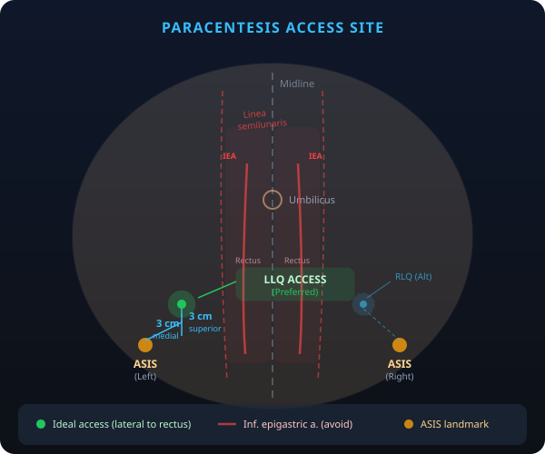
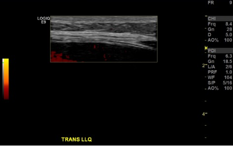
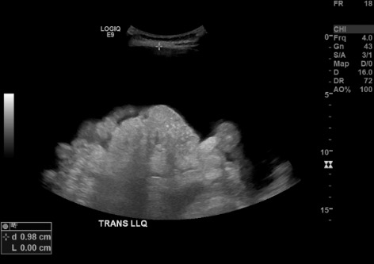
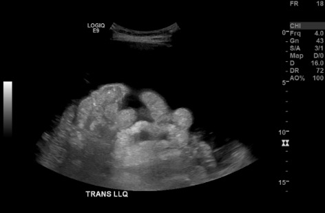
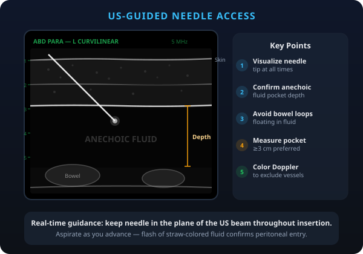
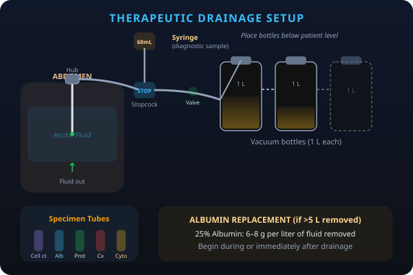

Indications / Contraindications
Indications
- Diagnostic: New-onset ascites of unclear etiology — fluid analysis to determine cause
- Therapeutic: Symptomatic tense ascites causing dyspnea, abdominal pain, early satiety
- Concern for spontaneous bacterial peritonitis (SBP) — obtain cell count + culture
- Drainage of loculated fluid collections not amenable to catheter
Contraindications
- Absolute: Hemodynamic instability · Uncorrectable coagulopathy · No safe access window
- Relative: Overlying cellulitis/skin infection · Surgical scars at access site (tethered bowel risk) · Pregnancy (use US guidance, avoid gravid uterus) · Massive organomegaly
- Note: Mild-moderate coagulopathy and thrombocytopenia common in cirrhotic patients and are generally NOT contraindications — routine lab correction is not required for simple paracentesis
Pre-Procedure Checklist
Relevant Anatomy
Access Site
- Ideal landmark: 3 cm medial and 3 cm superior to the ASIS — lateral to the rectus sheath (linea semilunaris), in the LLQ or RLQ
- Avoids the inferior epigastric artery (runs deep to rectus abdominis within the rectus sheath)
- LLQ often preferred — sigmoid colon tends to float; cecum in RLQ may be more fixed
- Midline infraumbilical approach is an alternative if lateral approach unavailable (avascular linea alba)
- Always confirm with US — the landmark guides initial probe placement, but final access site is determined by the largest safe fluid pocket
Danger Structures
- Inferior epigastric artery: Runs within the rectus sheath — always access lateral to rectus to avoid
- Distended bladder: Ensure patient has voided or has Foley prior to procedure
- Tethered bowel: Surgical scars may cause bowel adhesion to anterior abdominal wall — US to confirm clear window
- Organomegaly: Splenomegaly (LLQ) or hepatomegaly (RUQ) — confirm on US before access
How I Do It
Default RadCall approach + community cards
Supplies
Steps
Position + US survey




Prep + drape
Local anesthesia

Access

Sample collection
Therapeutic drainage

Completion
Troubleshooting
No fluid return after needle insertion
Likely cause: Needle not deep enough, loculated fluid, or bowel interposition.
Next step: Confirm needle tip position with real-time US. Adjust depth or angle. If loculated, reposition patient or select a different pocket. Consider using a longer needle if abdominal wall is thick.
Bloody aspirate
Likely cause: Traumatic tap (vessel laceration) vs. pre-existing hemorrhagic ascites (malignancy, anticoagulation).
Next step: If bloody on initial aspiration, send fluid for hematocrit — if ascites Hct is <1% of serum Hct, likely traumatic. If persistent bright red blood, stop procedure and monitor. Hemorrhagic ascites (malignancy) will not clot in the tube; traumatic tap will.
Persistent ascites leak at puncture site
Likely cause: Most common complication (~5%). Due to persistent communication between peritoneal cavity and skin through needle tract.
Next step: Apply Dermabond or purse-string suture. Position patient on contralateral side to shift fluid away. An ostomy bag can be applied as temporizing measure. Consider Z-track technique for future access.
Flow stops during drainage
Likely cause: Catheter kinked, omentum or bowel plugging side holes, fluid redistributing.
Next step: Reposition patient (roll toward catheter side). Gently flush with saline. Apply gentle abdominal pressure contralaterally. If still no flow, may need to reposition catheter under US.
Complications
Immediate
- Ascites leak (~5%) — most common; Dermabond, suture, or ostomy bag
- Bleeding (<1%) — vessel laceration; figure-of-eight suture at entry site; laparotomy rarely needed
- Bowel perforation (<1%) — usually self-sealing; monitor for peritonitis signs
- Hypotension — from rapid large-volume removal without albumin replacement
Delayed
- Post-paracentesis circulatory dysfunction (PPCD) — hypovolemia, hyponatremia, renal impairment after large-volume drainage without albumin; can occur 12–72 hours post
- Infection — rare with sterile technique; cellulitis at puncture site
- Persistent leak — may require additional closure or indwelling catheter consideration
Post-Procedure Care
Monitoring
- Vitals q30 min × 1 hour (especially large-volume paracentesis)
- Monitor puncture site for bleeding, infection, or fluid leak
- Document fluid color, clarity, and total volume removed
- No routine post-procedure imaging required
Albumin Replacement
- >5 L removed in cirrhotic patient: Administer 25% albumin 6–8 g per liter of fluid removed
- Begin infusion during or immediately after drainage
- Prevents PPCD (hypovolemia, hyponatremia, hepatorenal syndrome)
- Anticoagulation: Resume 24 hours post-procedure (earlier if high thrombotic risk)
Critical Pearls
Fluid Analysis Reference
| Test | Normal / Significance | Interpretation |
|---|---|---|
| SAAG (serum - ascites albumin) | ≥1.1 g/dL | Portal hypertension (97% accuracy): cirrhosis, heart failure, Budd-Chiari, portal vein thrombosis |
| <1.1 g/dL | Non-portal hypertensive: malignancy, TB peritonitis, pancreatitis, nephrotic syndrome | |
| Cell count | PMN ≥250/mm³ | Spontaneous bacterial peritonitis (SBP) — start empiric antibiotics immediately (cefotaxime) |
| Total protein | ≥2.5 g/dL | Exudate (malignancy, TB, pancreatitis). <2.5 = transudate (cirrhosis, heart failure) |
| LDH | Ratio ~0.4 normal | Approaches 1.0 with infection, bowel perforation, or malignancy |
| Glucose | Lower than serum | Suspect infection or malignancy; undetectable → bowel perforation |
| Amylase | Ratio ~0.4 normal | Elevated with pancreatic leak or bowel perforation |
| Bilirubin | Ascites > serum | Biliary or bowel perforation |
| Triglycerides | >200 mg/dL | Chylous ascites (lymphatic disruption, malignancy, cirrhosis) |
| Cytology | — | Malignant cells; sensitivity ~60–75% with adequate volume (≥200 mL) |
| Gram stain / culture | — | Inoculate blood culture bottles at bedside for best yield |
Fluid Appearance
- Clear/straw-colored: Uncomplicated transudative ascites
- Turbid/cloudy: Infection (SBP) or high cell count
- Milky/opalescent: Chylous ascites (elevated triglycerides) or cirrhosis
- Pink/bloody: Traumatic tap, malignancy, or cirrhosis (check Hct)
- Brown: Elevated bilirubin — biliary or bowel perforation